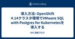
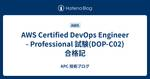
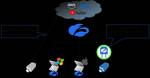

APC 技術ブログ
https://techblog.ap-com.co.jp/
株式会社エーピーコミュニケーションズの技術ブログです。
フィード

Amazon EKSのアクセス管理をAccess Entryでシンプルにする 1
1
APC 技術ブログ
こんにちは、クラウド事業部の山路です。 昨年12月のアップデートにより、Amazon EKSへのアクセス制御方法を Access Entry というリソース/APIで実現できるようになりました。今回はこの新機能を簡単に検証してみます。 aws.amazon.com 背景 Amazon EKSへのアクセスを制御する場合、これまではAWS、KubernetesのそれぞれのAPIに対するアクセス制御を設定する必要がありました。 ※参考： repost.aws これによる課題はいくつかあります。 まず、アクセス制御を実現するための手順が複雑になります。クラスター管理者はAWS APIとKubernet…
13時間前

AWS アカウントに Google Workspace ユーザーでシングルサインオンしてみた。(part3)
APC 技術ブログ
目次 目次 はじめに 前提条件 手順概要 手順 8.IAM Identity Center グループを作成する 9.Google Workspace ユーザーをIAM Identity Center グループに追加する 10.IAM Identity Center グループにAWSアカウントへのアクセス権を付与する 11.Google Workspace ユーザーの AWS リソースへのアクセスを確認する まとめ お知らせ はじめに こんにちは。エーピーコミュニケーションズ クラウド事業部の髙野です。 本記事ではGoogle Workspace ユーザーを IAM Identity Cente…
2日前

LogicAppsでサーバアラートを受け取る
APC 技術ブログ
はじめに Power Platform推進チームの鈴木です。 本日はLogicAppsを使って、AzureMonitorによるサーバアラートを受け取る処理を検証してみたいと思います。 Power Platform推進チームがなんでLogic Apps？と思われるかもしれませんが、Power Platformの一つであるPower AutomateとLogicAppsはどちらもデザイナー画面を中心にノーコード・ローコードで自動化や色々なサービス（コネクタ）との連携を実現できるシロモノです。 私が担当しているお仕事ではLogicAppsを使うことが多いので、今回はLogicAppsによる自動化処理…
3日前

VirtualBoxにてGitLabSelf-Managed環境を立てる
APC 技術ブログ
こんにちは。 クラウド事業部CI/CDサービスメニューチームの菅家です。 Oracle VirtualBoxにてCentOS環境にGitLabEEのSelf-Managed無償版をインストールし、 環境を立てたので、やり方について記事に残しておきます。 インストールに関してはほぼ公式のコマンドのとおりですが インストールを試してみたけどなんだかうまくいかないというような際に参考になれば幸いです。 目次 目次 前提 GitLab Self-Managed版のインストール手順 アドレスをhttpsとした場合の対応 最後に 前提 VirtualBoxにて以下の設定が済んだ仮想マシンが作成されているこ…
3日前

GitLab 16.10 アップデート内容の紹介
APC 技術ブログ
こんにちは、クラウド事業部 CI/CDサービスメニューチームの山路です。 今回は3月21日にリリースされたGitLab 16.10のリリース情報を紹介します。本記事ではすべてのアップデート情報を詳細に記載してはいませんので、興味ある内容があれば各ドキュメントを参照ください。 なおGitLab 16.10へのバージョンアップ時は、内部で利用するPatroniのメジャーバージョン更新に伴い、ダウンタイムを伴うアップグレードとなります。 about.gitlab.com CI/CD Catalog利用時のversionをSemantic versioningに強制 GitLab Duo機能をProj…
4日前
【Amazon Connect】画面遷移を含んだステップバイステップガイドを作成する
APC 技術ブログ
目次 目次 はじめに どんなひとに読んで欲しい 目標 やりたいこと 検証ステップ 検証 ①画面作成2画面（メニュー、フォーム） ②画面で押したボタンによって分岐をする設定を行う ③2画面を行き来できるフローの作成 動かしてみる おわりに お知らせ はじめに こんにちは、クラウド事業部の菅家です。 Amazon Connectのステップバイステップガイド続きです。 前回はノーコードUIビルダーの使用を目的に1画面だけ作成しましたが、 どうせなら複数画面を作って画面遷移も試してみたく、本検証を実施しました。 いずれは短いデモシナリオを立て、シナリオに沿ったステップバイステップガイドを作成出来たらい…
4日前

Microsoft MVP Global Summitに参加してきました
APC 技術ブログ
はじめに こんにちは、ACS事業部の吉川です。 先週、Microsoft MVP Global Summit というイベントに参加してきたので、その思い出を書き綴ります。 Microsoft MVP とは？ Microsoft製品に対する専門知識を有し、その知識をコミュニティに還元している人を表彰する制度です。 ありがたいことに、私も昨年6月にMicrosoft MVPを受賞しています。暖かく迎え入れてくれたコミュニティの皆さまのおかげです。改めて感謝申し上げます。 www.ap-com.co.jp MVP Global Summit とは？ Microsoft MVPが参加できる、NDAのも…
5日前

Fivetranを利用してAWS LambdaからDatabricksにデータを送信しましょう-! (with S3経由)
APC 技術ブログ
はじめに エーピーコミュニケーションズGLB事業部Lakehouse部の鄭(ジョン)です。 この記事ではFivetranのAWS Lambdaコネクターを利用して、データをDatabricksに送信する方法を紹介いたします。 今回使ったデータ送信方法は、S3経由方法です。 検証は、以下のFivetran公式ドキュメントを見ながら進めました。 fivetran.com Fivetranでは、コネクタを使って多様なデータソースに対応できます。 概要は、以下の記事をご参考ください。 techblog.ap-com.co.jp Fivetranを利用すれば簡単かつ迅速に多様なソースのマイグレーションが…
5日前

TryHackMe Advent of Cyber 2023から2024へ（１） What is TryHackMe?
APC 技術ブログ
Advent of Cyber2023の復習と2024の予習をテーマにTryHackMeの概要と毎年１２月に開催されているイベントであるAdvent of Cyberについて紹介します。
6日前

AWS全冠の振り返り
APC 技術ブログ
こんにちは、株式会社エーピーコミュニケーションズ、クラウド事業部の松尾です。 約10か月かけてAWS認定試験の12試験取得（＝全冠）達成しました！学習方法や反省点をお伝え出来ればと思います。これから全冠を目指す、または検討している方の力になれば。 CredlyのBadges 大まかな受験スケジュール 時系列にしてみました。学習期間の目安は、Associateは2，3週間、Professionalは2か月、専門知識は1か月、くらい。Professionalは別として1か月あると対策が出来た感覚でした。セオリーではないですがAssociateを受けたのは最後でした。 合格日 試験名称 学習期間 2…
6日前

導入方法: OpenShift 4.14クラスタ環境でVMware SQL with Postgres for Kubernetesを導入する
APC 技術ブログ
概要 OpenShift 4.14クラスタ環境に、VMware SQL with Postgres for Kubernetesを導入します。 参考資料 docs.vmware.com 前提 コンテナイメージの取得方法 インターネット上のリポジトリに直接アクセスするようにはしない。 OCP 内部イメージレジストリにイメージを push した上で、OCP 内部イメージレジストリからコンテナをデプロイする方法とする。 cert-manager インストール対象 OSS の cert-maneger ではなく cert-manager Operator for Red Hat OpenShift を…
8日前

AWS Certified DevOps Engineer - Professional 試験(DOP-C02) 合格記
APC 技術ブログ
こんにちは、株式会社エーピーコミュニケーションズの松尾です。 2024年2月4日にDOP-C02に合格出来たので学習方法など共有したいと思います。 プロフェッショナルレベルで難易度の高い試験だったこともあり、皆さんの学習の参考になれば幸いです。 ** 受験前の知識レベル - 元ネットワークエンジニアで設計、構築の経験あり。 - 開発の知見、経験は無し。lambdaの実装をなんとか行える程度。 - AWS業務からは離れている状況。 ** 学習期間 - 2023年12月～2024年1月の約2か月間、平日1時間、通勤時間を使う形で学習を進めてました。 ** 学習内容 - 最初にUdemyの教材で試験…
8日前
Platform Engineeringは「標準化」ではない
APC 技術ブログ
はじめに こんにちは、ACS事業部の東出です。 私はACS事業部でDX Enabling部という、内製化コンサルティング・プロダクト開発支援を提供する部署の責任者をしております。 ACS事業部では、Platform Engineeringに関する取り組みや情報発信を積極的におこなっています。 techblog.ap-com.co.jp www.ap-com.co.jp www.ap-com.co.jp ユーザー企業の方々にPlatform Engineeringのご紹介をさせて頂く際に、「標準化とどう違うの？」といったご質問を頂くことがございます。 今回は、所謂「標準化」とPlatform E…
9日前
Fivetranを利用して簡単にデータをマスキングしましょう-! (with Databricks)
APC 技術ブログ
はじめに エーピーコミュニケーションズGLB事業部Lakehouse部の鄭(ジョン)です。 この記事ではFivetranのHashed機能を利用して、データを簡単にマスキングする方法を紹介いたします。 検証は、Fivetranを通じてDatabricksにアップロードされたデータにある特定のカラムをマスキングします。 Fivetranでは、コネクタを使って多様なデータソースに対応できます。 Fivetranを通じてDatabricksにデータをアップロードする方法は、以下の記事をご参考ください。 以下の方法以外に、多様なソースのマイグレーションが可能です。 興味がある方は、ご連絡いただければ幸…
9日前

Zscaler: 話題のBranch Connectorを構築してみた
APC 技術ブログ
#1 はじめに こんにちは、エーピーコミュニケーションズ 0-WANの島田です。近頃、Zscaler話題の新機能 Branch Connector のVMを構築する機会がありました。今回はその様子とともに、Branch Connectorとはどんなものなのかを簡潔に説明していきたいと思います。 #2 Branch Connectorとは 主にIoT/OTデバイスからの通信について、Zscalerを経由するように仲介するインスタンスのことを Branch Connector と呼びます。 IoT/OTデバイスはWindowsやLinuxなどの一般的なOSを搭載しておらず、Zscalerのエージェ…
12日前
部長、なぜシステム監査技術者試験を受けたのですか？
APC 技術ブログ
はじめに こんにちは、ACS事業部の東出です。 私はACS事業部でDX Enabling部という、内製化コンサルティング・プロダクト開発支援を提供する部署の責任者をしております。 さてみなさん、システム監査技術者試験を受けられたことはあるでしょうか？ 私は昨年秋の情報処理技術者試験で、システム監査技術者試験に合格しました。 www.ipa.go.jp 今日は「何でﾌﾞﾁｮｰさんがそんな資格取ったの？」や「どうやって勉強したの？」についてご紹介したいと思います。 なぜシステム監査技術者試験を受けようと思ったのか 内製化コンサルティングでは、以下のような流れで内製化戦略を立案・提案していきます。 …
13日前

AWS Step Functions で Task の出力を保持しておき後の Task で参照する
APC 技術ブログ
こんにちは。クラウド事業部の野本です。 AWS 上でバッチ処理を実装する際、複数の Lambda 関数を順番に呼び出すために Step Functions を使う機会がありました。単純なものなら Workflow Studio でステートを並べるだけで視覚的に組み立てられるのですが、 Lambda の入出力を複雑に受け渡すには Step Functions の入出力を理解する必要があり苦労しました。 本記事では Step Functions の離れたステート間で入出力を受け渡す設定方法について纏めます。特に Task ステートにおける入出力処理を、ステートの定義をプログラムに翻訳して理解してみ…
16日前
EntraIDユーザアカウントに対して多要素認証を一括で設定する方法
APC 技術ブログ
背景 こんにちは。クラウド事業部の宇野です。 AzureのEntraIDユーザアカウントに対してMFA（多要素認証）を設定する際、「ユーザごとのMFA」という機能で設定できます。MFAの種別として「無効」「有効」「強制」と３種類ありますがそれぞれ設定方法が異なり分かりづらい部分がありましたので今回紹介させていただきます。 目的 EntraIDユーザーアカウントに対して一括でMFAを設定する どのような方に読んでほしいか 極力費用をかけずにMFA設定を一括で設定したい方 前提条件 ■EntraIDのプランについて今回はEntraIDのFreeプランを前提にしています。Microsoft Entr…
17日前
１つのWAFからWebアプリごとにグローバルIPアドレスを制限する方法
APC 技術ブログ
はじめに こんにちは。クラウド事業部の宇野です。 AzureのFrontDoorもしくはApplicationGatewayを利用して、複数のアプリを振り分けるケースがあると思います。その際にアプリごとに接続可能なグローバルIPアドレスを制限するWAFの設定方法を説明していきます。 Azure WAFとは？ Azure WAF（Web Application Firewall）SQL インジェクションなどの一般的な Web ハッキング手法や、クロスサイト スクリプティングなどのセキュリティ脆弱性から Web アプリを保護するクラウドネイティブ サービスです。 learn.microsoft.c…
17日前
EntraIDユーザーアカウントによるSAML認証を制御する方法
APC 技術ブログ
背景 こんにちは。クラウド事業部の宇野です。 AzureのWebアプリケーションでEntraIDユーザーアカウントによるSAML認証を制御する方法が分かりづらかったため、その方法について紹介させていただきます。 目的 EntraIDユーザーアカウントによるSAML認証を制御する どのような方に読んでほしいか 極力費用をかけずにユーザー認証制御を行いたい方 前提条件 ■EntraIDのプランについて今回はEntraIDのFreeプランを前提にしています。Microsoft Entra ID P1やP2などの有料プランであれば、より複雑なユーザ認証制御が可能な「条件付きアクセスポリシー」という選択…
17日前
AzureのMFAパターンが複雑なため整理してみた
APC 技術ブログ
背景 こんにちは。クラウド事業部の宇野です。 AzureのMFA（多要素認証）を設定する際、様々なAzure側の設定要素の組み合わせによりMFA認証の挙動が異なるため分かりづらいと感じました。 以下の公式サイトより2019年10月以降から「セキュリティの既定値群」の有効化が促されていて、「すべてのユーザーに対して Microsoft Entra 多要素認証への登録を必須にする」ということを記載されていたので、全員がMFA必須なんだ、安心安心。と短絡的に思っていたのですが、MFAの「登録」と「認証」は別の話。よくよく読み進めると、Azureの管理者ロールのEntraIDユーザだけMFA認証の要求…
19日前
【新卒未経験】Prometheus＋Thanos＋Grafanaでクラウドネイティブな監視を。
APC 技術ブログ
はじめに 使用するツールの紹介 Prometheus Thanos Grafana 構成図と完成イメージ 最後に（次回へ続く） はじめに こんにちは、ACS事業部の小原です。 先日クラウドネイティブとは？ というテーマで備忘録的な記事を投稿しましたが、 今回から実践編ということでクラウドネイティブな監視を行うツールについてご紹介したいと思います。 難しいですが、可視化した時のカッコよさは最高です！！ 使用するツールの紹介 今回はAKSのメトリクス監視を行います。 使用するツールはPrometheus, Thanos, Grafanaです。 それぞれ紹介していきたいと思います。 Promethe…
21日前
Azure Database for PostgreSQLのメジャーバージョンアップ
APC 技術ブログ
はじめに みなさん、こんにちは。ACS事業部 亀崎です。 以前からPostgreSQLなどCloud Serviceのバージョンアップどうすればいいのかな、といつも考えていたのですが、Azure Database for PostgreSQL Flexible Serverの場合、メジャーバージョンアップ機能が1年前の2023年2月にGAになっていました。 techcommunity.microsoft.com こちらがドキュメントです。 learn.microsoft.com デモ環境の構築初期で、まだ壊れても問題にならないって状態のPostgreSQL Flexible Server(v1…
22日前
AKSのnode pool 削除時に発生したエラーを解消した話
APC 技術ブログ
はじめに こんにちは。エーピーコミュニケーションズ ACS事業部 亀崎です。 今AKSでデモ環境を稼働しています。 今回の話題はこのAKS環境のnode poolのVMサイズを変更した際の話です。 learn.microsoft.com node poolの新規作成は問題なく完了し、（PodのDrainを含む）削除を行ったときに発生したエラーとその際に行った作業をお知らせしたいと思います。 発生したエラー 残念ながら発生した際のエラーメッセージは残していなのですが、概ね以下のようなメッセージでした。 This is often caused by a restrictive Pod Disru…
23日前
CrowdStrike XDR構築<Zscaler,Okta編>
APC 技術ブログ
はじめに XDRとはなにか 構成図 ①Zscalerログの格納 ②Oktaログの格納 ③ZscalerとOktaのユーザー、グループ同期 構築について 必要なもの CrowdStrike設定確認 Zscaler設定 つまづきポイント Okta設定 連携確認 各種ソリューションログの確認 おわりに 0-WANについて 一緒に働いて頂ける仲間も募集しています はじめに こんにちは、エーピーコミュニケーションズiTOC事業部 BzD部 0-WANの篠崎と申します。 CrowdStrikeの設計、構築、運用からSOCまで幅広く対応できるエンジニアとして日々研鑽に励んでおります。 今回は弊社で検証環境と…
1ヶ月前
【Tips!】EventBrdige のdetail-typeの罠
APC 技術ブログ
目次 目次 はじめに どんなひとに読んで欲しい 関連記事 事象 原因 解決策 おわりに お知らせ はじめに こんにちは、クラウド事業部の清水(雄)です。 AWS ChatOPSサービス開発時にEventBrdige のdetail-typeの設定で悪戦苦闘したので 備忘録として記載させていただきます。 まさか発行元が違うなんて、、、 どんなひとに読んで欲しい 「EventBrdige」の設定で意図した通知をしたい人 「EventBrdige」の設定したの検知出来ずに困っている人 関連記事 ※AWSの定型作業を楽にする ~チャットツールを活用した例の紹介~↓ techblog.ap-com.co…
1ヶ月前
PowerApps×PowerAutomateで図書管理アプリを作ってみた
APC 技術ブログ
はじめに PowerPlatform推進チームの谷森です。 以前少しだけプログラミングをかじっていましたがほぼ素人同然の私がそんな大作作れるのか...？ という不安を抱えつつもノーコード/ローコード開発に挑戦してみました！ いざ作成 同じ推進チームの小野さんが出している以下の2コースを参考にして作成しました！動画の手順通りに進めたら、詰まることなく図書管理アプリを作成できましたし、PowerAppsとPowerAutomateについての知識を深められました。PowerPlatformをこれから始めるという私と同じような方にはオススメです！ www.udemy.com www.udemy.com…
1ヶ月前
Amazon Connect ノーコードのUIビルダーでステップバイステップガイドを作成してみる
APC 技術ブログ
はじめに こんにちは。エーピーコミュニケーションズクラウド事業部の菅家です。 Amazon ConnectのステップバイステップガイドをノーコードのUIビルダーで試したところをまとめます。 ステップバイステップガイドとはエージェント（電話を受け取るオペレーター）に対して、顧客とのやり取りの際に動的にオペレーションのガイド画面を提供する機能となります。 作成・設定されたステップバイステップガイドはAmazon Connect Agent Workspaceにて表示されます。 aws.amazon.com ステップバイステップガイドを使用するには、ガイドの画面作成が必要になってきますが、 2023…
1ヶ月前
【AWS】AWS Certified DevOps Engineer - Professional(DOP-C02) を受けてみて
APC 技術ブログ
はじめに こんにちは。クラウド事業部の早房です。 AWS Certified DevOps Engineer - Professional(DOP-C02) を受験し無事に合格しました。 受験に至ったきっかけや実際の試験の感想について綴ります。 出題範囲と割合について 出題範囲と割合は以下です。 • 第 1 分野: SDLC のオートメーション (採点対象コンテンツの 22%) • 第 2 分野: 設定管理と IaC (採点対象コンテンツの 17%) • 第 3 分野: 耐障害性の高いクラウドソリューション (採点対象コンテンツの 15%) • 第 4 分野: モニタリングとロギング (採点対…
1ヶ月前
AWS Control Tower の Account Factory で作成した AWS アカウントに Microsoft Entra ID (旧 Azure AD) ユーザーでシングルサインオンする！(AWS アカウント作成編)
APC 技術ブログ
img{ display: inline-block; box-sizing: border-box; border: solid 1px #333; } はじめに こんにちは。クラウド事業部の早房です。 前回に引き続き、AWS Control Tower の Account Factory で作成した AWS アカウントに Microsoft Entra ID (旧 Azure AD) ユーザーでシングルサインオンする！という内容で記事を書きます。 本記事では、Control Tower の機能である Account Factory を使用して AWS アカウントを作成します。 これまでの記…
1ヶ月前